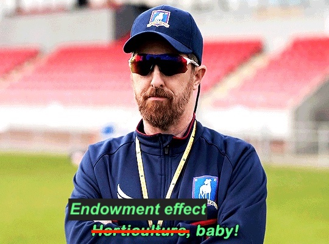
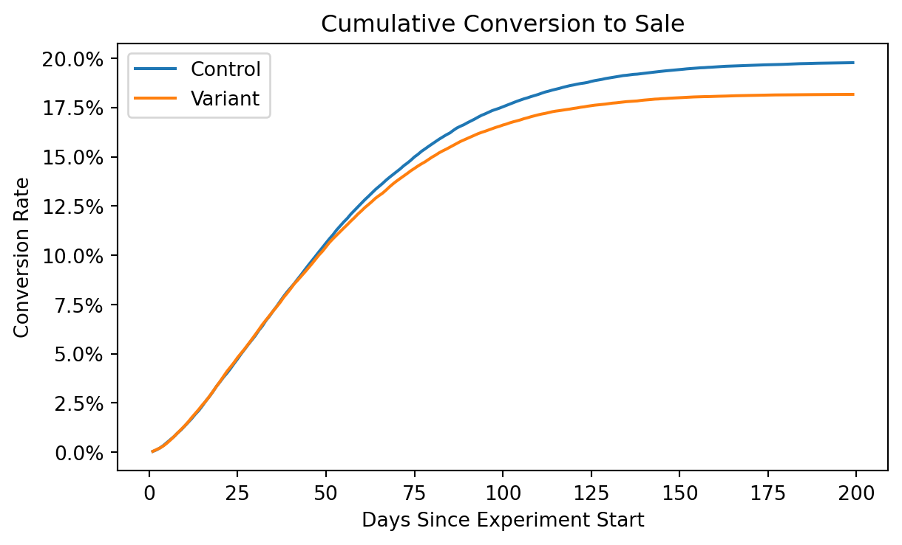
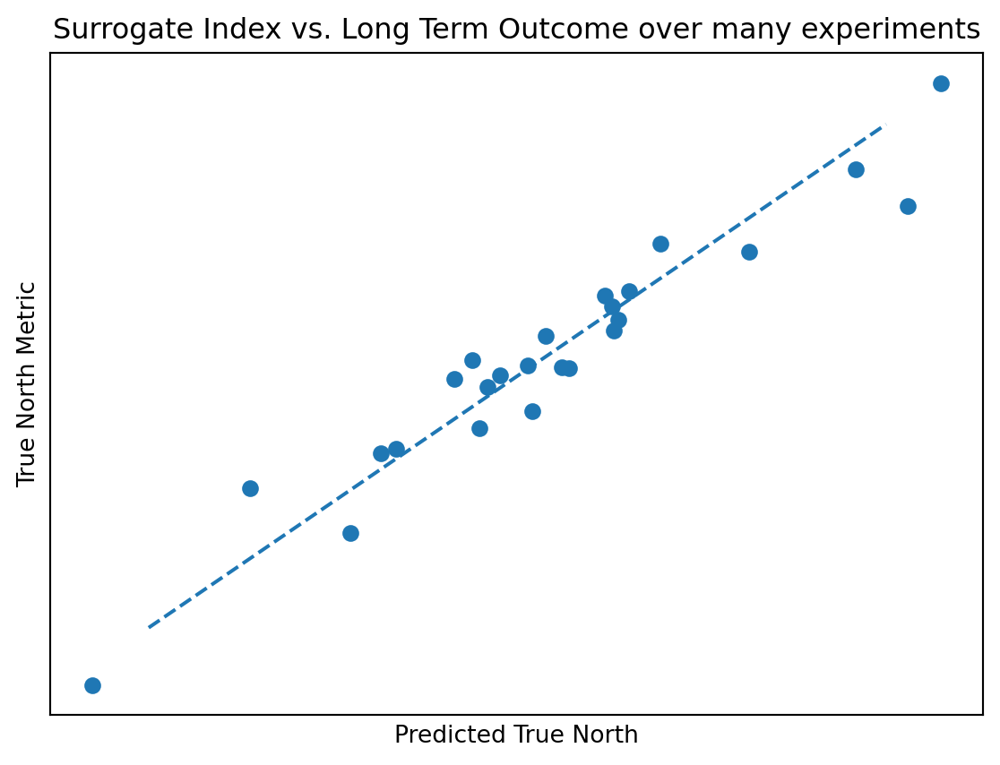

Experiments have alot more use cases than many give them credit for. At their simplest, they’re a tool for mitigating risk when making product decisions. But at their best, they’re a tool that can help optimize an entire business.
Every business has its own unique problems and goals, and this post is a case study where strategy was made across experiments to fit the needs of the business.
TLDR
Building Trust First
More interesting questions come natually as the process improves
How do we make sure our decisions help our long term outcome? –> Surrogate index
At the end of the day, the real strategy is building trust with stakeholders. Once that trust is built up, thats when you get the chance to start having a bigger influence on the business.
Part 1: Identifying the business problems and needs
Policygenius is an insurance marketplace that aims to help customers find insurance policies. Selling insurance isn’t quite the same as e-commerce; it’s a major life decision, and major life decisions take some time to decide on. In fact, customers typically took 3-6 months to purchase a life insurance policy (our true-north metric). Thats a long time to monetize a lead. Attempting to improve a long-term outcome like that can be difficult, but that wasn’t a problem that the business fully understood the implications of when I first started. The business needs changed over time and so did our strategy to addres them, but that one problem eventually became the focal point of our strategy.
Early stage needs - Starting Simple, Building trust
When I joined the company, I was just the third data science hire, and there really wasn’t any experimentation practice in place beyond stakeholders watching an optimizely dashboard. Listening to stakeholders, there was a desire to build more trust in decision making and make sure their products decisions were actually improving things for the customer.
We started simple - a google doc template where stakeholders could explain the product feature they wanted to implement and their hypothesis on what outcome the product feature might improve. From there we worked with them to design a measurement strategy to answer their question, which wasn’t always an experiment. At the end of the day, experimentation is just one of many tools for causal inference. Having this process and flexibility helped us earn buy-in - we weren’t just there to tell them what we could and couldn’t do. We were there to educate so that we weren’t just recommending solutions, but so that stakeholders were playing a really active role in what our measurement strategy should be.

We also improved the experiment output from an optimizely dashboard to an in-house report. All of this built alot more trust in the results, and helped us move on to new questions like
“Can we use different outcome metrics beyond conversion rate?”
Again, we weren’t just throwing cool implementations at them we thought they needed, we were listening to what our stakeholders wanted first and then prioritizing it. As we moved up the ladder in terms of trust, I was able to get buy in to build out scalable tooling for others in the company to start usin, and we were able to scale the process to other teams.
There was also 1 key tenant I tried to keep in mind as our methodology became more advanced: could we directly observe the treatment effect? (simple difference in outcomes). No matter how advanced of a method we might consider, throwing some output from a blackbox model at a stakeholder was never the way to go. It can’t be understated how important directly observing the treatment effect is for trust.
Part 2 - New problems
Our early stage strategy for experiments was to try and optimize mid-funnel outcomes (with intermediate guardrail metrics), since it would take too long to observe lower funnel outcomes. We wanted to be running experiments at 1-2 week cadences, we couldnt afford to wait 3-6 months for experiments. This did come with risk however, so we had built some visibility to see how users who were exposed to some experiments were baking out months later. I’m not sure why baking is a professional term to wait and see an outcome over time, but it is.
The opportunity for a long-term strategy arose as we began running into new problems.
Problem 1: Infrastructure
Some pillars of the business had less established data models (the data engineering kind of data models) - so setting up different SQL queries for different experiments was a painpoint for some product pillars.
Problem 2: Secondary Analyses and personalization
The data team was getting burnout. With each experiment came what we called “secondary analysis”. Really, what stakeholders were interested in was heterogeneous treatment effects, or “who does the treatment work best for”, because the vision was to personalize the product flow based on the customer. But for the data team, the analysis that came with it was entirely manual and would drag on when there wasn’t a clear answer (often). It was also a risk for false positives from multiple hypothesis testing.
Problem 3: Sample Size
There are only so many customers interested in private insurance in this country, and that limited sample size quite a bit. We were already choosing power and false positive rate parameters for our tests that would allow us to move quicker across the company, but there was a real desire from stakeholders to move faster, especially since some experiments could take up to a month.
Problem 4: Spillover effects
A major step of our funnel involved sales agents, which we had a limited supply. This had the potential for spillover effects, where if we sent them too many leads from a successful variant, it would impact the control. This is a classic SUTVA violation, which can bias the observed treatment effect.
Problem 5: Were we optimizing the wrong thing?
My second quarter with the life-insurance team we smashed through our OKRs that were targeted at improving mid-funnel outcomes (we were scoped to work on the top half of the funnel). The problem was that 3 months later we weren’t seeing those results trickle down to the bottom half of the funnel in the way that we thought it would.
In fact, in one of the most successful experiments we ran, we found that the customers who were exposed to the treatment fared worse in the long-term, despite seeming fine for the mid-funnel outcome and guardrail we were using.
Code
import numpy as npimport pandas as pdimport matplotlib.pyplot as pltimport matplotlib.ticker as mtickimport pymc as pm# Simulate out time to convert and conversion rate def sim_conversion(k, lambd, p, N=1000): ttc = np.ceil(pm.draw( pm.Weibull.dist(k, lambd), N)) convert = np.random.binomial(1,p, size=N)return pd.DataFrame({"time":ttc, 'convert':convert})def cohort_table(df):return ( df .groupby("time") .convert.agg(['sum','count']) .assign(conversions=lambda d: d['sum'].cumsum()) .assign(N=len(df)) .assign(cvr=lambda d: d.conversions/d.N) )def censor(df, time):return df.loc[lambda d: d.time<time]def simple_cohort_plot(df, ax=None, **plot_kwargs):if ax isNone: fig, ax = plt.subplots(1,1,figsize=(7,4)) (df.pipe(censor, time=200) .pipe(cohort_table) ['cvr'] .plot(ax=ax, **plot_kwargs)) ax.set( title='Cumulative Conversion to Sale', xlabel='Days Since Experiment Start', ylabel='Conversion Rate')fig, ax = plt.subplots(1,1,figsize=(7,4))N =100_000sim_conversion(1.5, 60, 0.2, N).pipe(simple_cohort_plot,ax=ax, label='Control')sim_conversion(1.5, 55, 0.18, N).pipe(simple_cohort_plot,ax=ax, label='Variant')ax.yaxis.set_major_formatter(mtick.PercentFormatter(1,1,))ax.legend()plt.show()

It turns out we had gamed our metric. We could find great ways to boost our target metric and crush our OKRs, but what good did it do for the company?
This was by far the biggest problem, and luckily thanks to all of the trust that we had built up and the co-ownership model we had adopted with our stakeholders this problem didn’t end up dissolving any trust we had. In fact, everyone was grateful it was caught. Thinking counterfactually, the business would have never know had we not adopted a rigorous experimentation process. The importance of this issue gave me the justification to come up with a plan and start addressing these problems we were running into.
Part 3 - Designing the long term strategy
What’s a surrogate index?
A surrogate index was a new piece of research from Susan Athey, basically a way to predict what a long term treatment effect would be given intermediate outcomes that could be observed sooner. It also neatly addressed the biggest problem we were facing.
Let’s say the long term outcome can be entirely explained by 3 intermediate outcomes, such as mid-funnel metrics that can be observed sooner. A model can be fit to that relationship on historical data like so:
The set of intermediate outcomes is known as a surrogate index; they’re a surrogate for the long term outcome. If you have a correct model for the DAG above, than all you need to do is observe outcomes 1-3. You could then just run an experiment as you normally would, but instead of using some game-able mid-funnel metric as the primary outcome, you could measure outcomes 1-3 for both the treatment and control group, and predict what the long-term outcome would be for each group. The difference in the prediction for the treatment group and the control group ends up being identical to the true long-term treatment effect (assuming that the model and dag are specified correctly).
As always, it’s easier said than done. You need to make sure that the entire intermediate effect between the treatment and the long-term outcome is captured by the DAG and the model. Or in english, you need to understand the exact effect that the intermediate outcomes have on the long term outcome, and you need to be right about it; you can’t be missing anything.
But there are ways to validate you’re on the right track. First, knowing something about DAGs and causal inference, you can call on the local markov property; the treatment should be conditionally independent of the long term outcome after conditioning on the surrogate index. That’s easy to test. One can alse make predictions on the long term outcome with their surrogate index and see if it ended up being correct when the long-term outcome gets observed (hopefully for repeated experiments). Also do-able. Even better, if you have many historical experiments, you could do this validation on that dataset across all of the experiments.
Code
# for simplicity, not actually simulating a true data generating processnp.random.seed(99)x = np.random.normal(0,3,size=25)true_north_metric = x*1.4+ np.random.normal(0, 0.5, size=len(x))predicted_true_north = np.random.normal(true_north_metric, 1)fig, ax = plt.subplots(figsize=(7,5))ax.scatter(predicted_true_north, true_north_metric)ax.plot([-8,7], [-8,7], ls='--')ax.set_xticks([])ax.set_yticks([])ax.set(xlabel='Predicted True North', ylabel='True North Metric', title='Surrogate Index vs. Long Term Outcome over many experiments')plt.show()

Unfortunately, we didn’t have a large dataset of historical experiments. For the experiments we did have, they didn’t have enough power to detect reasonably sized changes on our true-north bottom funnel metric. Those experiment had all been designed with mid-funnel metrics in mind, and therefore had smaller sample sizes.
Building a plan
In total there were 5 big problems to address, each with a different solution. There also weren’t alot of resources to devote to them. But if we could free up time for others running experiments, they could use some of that time to contribute to this roadmap.
In the end, the biggest priority was to implement surrogate indices, because that was having the biggest painpoint on our business - we couldnt keep working with game-able metrics that weren’t improving the business.
With that in mind, switchback experimentation was in direct conflict with that goal. Switchback experiments don’t allow you to observe long term outcomes because users arent the ones who are randomized, time periods are what is randomized. We could atleast monitor and set up guardrails to make sure there wasnt alot of spillover.
This also meant that bandit algorithms shouldn’t be part of our toolkit any time soon, even though there had been alot of interest in them. Bandit algorithms wouldn’t be ideal for learning the impact on long term outcomes, and using them to learn a surrogate index would be really difficult since the treatment propensity would be constantly changing over time.
I’ll summarize some of the easy and hard solutions I came up with:
Infrastructure
Solution: templated SQL for scalable experiment queries
“Who did the experiment work best for?”
Easy solution(s): Scalable code for Multiple hypothesis testing with corrections
Hard solution: Heterogeneuous Treatment Effect models
Sample Size problems
Easy solution(s): Quickly implement Informative priors. Since we had revenue as part of our overall evaluation criteria for some experiments, this provided a massive speedup
Hard Solution(s): Switchback Experimentation Engine
Optimizing for Long-term Outcomes
Easy Solution(s): Cohort monitoring, Longer experiments, long term hold-out groups
Hard solution(s): Surrogate Index approach
The final proposed plan ended up being the following:
Partner with the data team for each product pillar to build templated SQL for their experiments to save them time.
Automate the secondary analysis of experiments so that stakeholders could understand who the experiments worked best for. We actually chose the easy solution for this, multiple hypothesis testing with corrections. It was easy to implement it and it aligned with our principle of making sure the treatment effect is observable. Plus, if we ever got the point of heterogenous treatment effect modeling, it’d be alot more believeable for stakeholders if they could also look at the multiple hypothesis test reporting. This was a low lift way to free up the teams time and help our stakeholders answer what they wanted. Importantly, we lumped in metric observability with this so that we could understand which experiments were impacting which metrics.
Reduce experiment duration with informative priors and CUPED. Many experiments had an overall evaluation criteria that incorporated customer revenue, Customer revenue was wide-tailed (near lognormally distributed). Using priors was an incredibly easy and insanely effective way to reduce variance for experiments, speeding them up significantly. CUPED would be a way to take that even further. We planned for a data scientist to implement this with their newly freed up time after automating secondary analyses.
Set up monitoring for spillover effects, but don’t implement switchback experiments.
Center the life-insurance product’s experimentation strategy around a surrogate index. This meant running longer experiments so that there was enough power to detect effects on the true north metric. Hopefully after 6 months, we’d have enough information to build a correct surrogate index to start using.
There was still a big red flag. We’d have to run longer experiments, and we’d have to wait atleast 6 months to even start using this. That was met with alot of hesitation. Deviating from 1-2 week experiment cadences admittedly sounds a bit nuts. Companies need to grow, and to do that they need to change and try new things. But at the same time we had a problem we couldn’t avoid - the simple fact of the matter was that if we wanted to have conviction in our product changes, we’d have to wait 3-6 months to actually observe its down funnel impact.
We decided to compromise rigor for speed. We planned to immediately implement a surrogate index based on the small amount of data we had, begin running experiments with enough power to detect an effect on our true north metric (3-4 weeks), and use the surrogate index, a guardrail, and our usual mid-funnel outcome as joint primary outcome metrics for upcoming experiments. While not ideal, it’d allow us to start using these ideas immediately, and we’d also be able to build up a better dataset of experiments so that even if the first iteration of the surrogate index didn’t work, we could eventually learn the correct one. That, and we’d have enough power to observe treatment effects on the long term outcome (after waiting a long time).
Really, our overall strategy was a shift to improving observability. We created better observability on how experiments were affecting different outcomes and different customers and we created better observability on how our experiments were impacting our true north metric. The funny part is, early in my career I thought this was a big red flag - the more you observe the more likely you could be to identify a false positive. But thats impractical advice. You really have to be looking at the whole picture, that way you can start to understand the business and learn more. Just do so responsibly.
Summary
There’s alot that goes into experimentation beyond just a cool approach like a surrogate index, or CUPED, or HTE modeling. To even get to the point where people will believe in those things, trust needs to built up. The interesting problems we ran into at Policygenius were a huge motivation for me to learn more about recent research in experimentation and causal inference, but looking back I wouldn’t have gotten a chance to do any of that if we hadn’t already built strong foundations. That opened up the door to start influencing the long term strategy for how the business made product decisions.